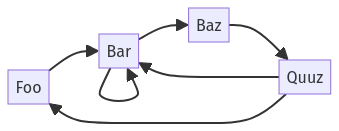

Examples
This page shows the different ways diagrams can be rendered. Most content for the examples is taken from Kroki's website, or the individual diagramming tools websites as linked from the docstring of various string literals.
String literals
The most straightforward way to create diagrams is to rely on the string literals for each of the available diagram types. The package needs to be updated to add string literals whenever the Kroki service adds a new diagramming tool. In case a string literal is not available, it will be necessary to resort to using the Diagram type directly.
ditaa"""
+--------+
| |
| Julia |
| |
+--------+
^
request |
v
+-------------+
| |
| Kroki |
| |---+
+-------------+ |
^ ^ | inflate
| | |
v +---------+
+-------------+
| |
| Ditaa |
| |----+
+-------------+ |
^ | process
| |
+-------+
"""" d="M45.0 147.0 L185.0 147.0 L185.0 203.0 L45.0 203.0 z"></path><path stroke="%23969696" fill="%23969696" filter="url(%23shadowBlur)" d="M45.0 259.0 L185.0 259.0 L185.0 315.0 L45.0 315.0 z"></path><path stroke="%23969696" fill="%23969696" filter="url(%23shadowBlur)" d="M85.0 35.0 L175.0 35.0 L175.0 91.0 L85.0 91.0 z"></path><path stroke="%23000000" stroke-width="1.0" stroke-linecap="round" stroke-linejoin="round" fill="white" d="M45.0 147.0 L185.0 147.0 L185.0 203.0 L45.0 203.0 z"></path><path stroke="%23000000" stroke-width="1.0" stroke-linecap="round" stroke-linejoin="round" fill="white" d="M45.0 259.0 L185.0 259.0 L185.0 315.0 L45.0 315.0 z"></path><path stroke="%23000000" stroke-width="1.0" stroke-linecap="round" stroke-linejoin="round" fill="white" d="M85.0 35.0 L175.0 35.0 L175.0 91.0 L85.0 91.0 z"></path><path stroke="%23000000" stroke-width="1.0" stroke-linecap="round" stroke-linejoin="round" fill="none" d="M195.0 189.0 L225.0 189.0 L225.0 245.0 L125.0 245.0 L125.0 217.0 "></path><path stroke="%23000000" stroke-width="1.0" stroke-linecap="round" stroke-linejoin="round" fill="none" d="M195.0 301.0 L235.0 301.0 L235.0 357.0 L155.0 357.0 L155.0 329.0 "></path><path stroke="none" stroke-width="1.0" stroke-linecap="round" stroke-linejoin="round" fill="%23000000" d="M125.0 98.0 L120.0 112.0 L130.0 112.0 z"></path><path stroke="none" stroke-width="1.0" stroke-linecap="round" stroke-linejoin="round" fill="%23000000" d="M120.0 126.0 L125.0 140.0 L130.0 126.0 z"></path><path stroke="none" stroke-width="1.0" stroke-linecap="round" stroke-linejoin="round" fill="%23000000" d="M95.0 210.0 L90.0 224.0 L100.0 224.0 z"></path><path stroke="none" stroke-width="1.0" stroke-linecap="round" stroke-linejoin="round" fill="%23000000" d="M125.0 210.0 L120.0 224.0 L130.0 224.0 z"></path><path stroke="none" stroke-width="1.0" stroke-linecap="round" stroke-linejoin="round" fill="%23000000" d="M90.0 238.0 L95.0 252.0 L100.0 238.0 z"></path><path stroke="none" stroke-width="1.0" stroke-linecap="round" stroke-linejoin="round" fill="%23000000" d="M155.0 322.0 L150.0 336.0 L160.0 336.0 z"></path><path stroke="%23000000" stroke-width="1.0" stroke-linecap="round" stroke-linejoin="round" fill="none" d="M125.0 105.0 L125.0 133.0 "></path><path stroke="%23000000" stroke-width="1.0" stroke-linecap="round" stroke-linejoin="round" fill="none" d="M95.0 217.0 L95.0 245.0 "></path><text x="108" y="68" font-family="sans-serif" font-size="15" stroke="none" fill="%23000000"><![CDATA[Julia]]></text><text x="44" y="124" font-family="sans-serif" font-size="15" stroke="none" fill="%23000000"><![CDATA[request]]></text><text x="94" y="180" font-family="sans-serif" font-size="15" stroke="none" fill="%23000000"><![CDATA[Kroki]]></text><text x="249" y="222" font-family="sans-serif" font-size="15" stroke="none" fill="%23000000"><![CDATA[inflate]]></text><text x="94" y="292" font-family="sans-serif" font-size="15" stroke="none" fill="%23000000"><![CDATA[Ditaa]]></text><text x="253" y="334" font-family="sans-serif" font-size="15" stroke="none" fill="%23000000"><![CDATA[process]]></text></g></svg>)
blockdiag"""
blockdiag {
Kroki -> generates -> "Block diagrams";
Kroki -> is -> "very easy!";
Kroki [color = "greenyellow"];
"Block diagrams" [color = "pink"];
"very easy!" [color = "orange"];
}
"""" height="40" stroke="rgb(0,0,0)" style="filter:url(%23filter_blur);opacity:0.7;fill-opacity:1" width="128" x="67" y="46" />
<rect fill="rgb(0,0,0)" height="40" stroke="rgb(0,0,0)" style="filter:url(%23filter_blur);opacity:0.7;fill-opacity:1" width="128" x="259" y="46" />
<rect fill="rgb(0,0,0)" height="40" stroke="rgb(0,0,0)" style="filter:url(%23filter_blur);opacity:0.7;fill-opacity:1" width="128" x="259" y="126" />
<rect fill="rgb(0,0,0)" height="40" stroke="rgb(0,0,0)" style="filter:url(%23filter_blur);opacity:0.7;fill-opacity:1" width="128" x="451" y="46" />
<rect fill="rgb(0,0,0)" height="40" stroke="rgb(0,0,0)" style="filter:url(%23filter_blur);opacity:0.7;fill-opacity:1" width="128" x="451" y="126" />
<rect fill="rgb(173,255,47)" height="40" stroke="rgb(0,0,0)" width="128" x="64" y="40" />
<text fill="rgb(0,0,0)" font-family="sans-serif" font-size="11" font-style="normal" font-weight="normal" text-anchor="middle" textLength="31" x="128.5" y="66">Kroki</text>
<rect fill="rgb(255,255,255)" height="40" stroke="rgb(0,0,0)" width="128" x="256" y="40" />
<text fill="rgb(0,0,0)" font-family="sans-serif" font-size="11" font-style="normal" font-weight="normal" text-anchor="middle" textLength="56" x="320.0" y="67">generates</text>
<rect fill="rgb(255,255,255)" height="40" stroke="rgb(0,0,0)" width="128" x="256" y="120" />
<text fill="rgb(0,0,0)" font-family="sans-serif" font-size="11" font-style="normal" font-weight="normal" text-anchor="middle" textLength="10" x="320.0" y="146">is</text>
<rect fill="rgb(255,192,203)" height="40" stroke="rgb(0,0,0)" width="128" x="448" y="40" />
<text fill="rgb(0,0,0)" font-family="sans-serif" font-size="11" font-style="normal" font-weight="normal" text-anchor="middle" textLength="87" x="512.5" y="67">Block diagrams</text>
<rect fill="rgb(255,165,0)" height="40" stroke="rgb(0,0,0)" width="128" x="448" y="120" />
<text fill="rgb(0,0,0)" font-family="sans-serif" font-size="11" font-style="normal" font-weight="normal" text-anchor="middle" textLength="58" x="512.0" y="147">very easy!</text>
<path d="M 192 60 L 248 60" fill="none" stroke="rgb(0,0,0)" />
<polygon fill="rgb(0,0,0)" points="255,60 248,56 248,64 255,60" stroke="rgb(0,0,0)" />
<path d="M 192 60 L 224 60" fill="none" stroke="rgb(0,0,0)" />
<path d="M 224 60 L 224 140" fill="none" stroke="rgb(0,0,0)" />
<path d="M 224 140 L 248 140" fill="none" stroke="rgb(0,0,0)" />
<polygon fill="rgb(0,0,0)" points="255,140 248,136 248,144 255,140" stroke="rgb(0,0,0)" />
<path d="M 384 60 L 440 60" fill="none" stroke="rgb(0,0,0)" />
<polygon fill="rgb(0,0,0)" points="447,60 440,56 440,64 447,60" stroke="rgb(0,0,0)" />
<path d="M 384 140 L 440 140" fill="none" stroke="rgb(0,0,0)" />
<polygon fill="rgb(0,0,0)" points="447,140 440,136 440,144 447,140" stroke="rgb(0,0,0)" />
</svg>)
svgbob"""
▲
Uin ┊ .------------------------
┊ |
┊ |
*---'┄┄┄┄┄┄┄┄┄┄┄┄┄┄┄┄┄┄┄┄┄┄┄┄▶
""";
}
.svgbob .start_marked_arrow {
marker-start: url(%23arrow);
}
.svgbob .end_marked_diamond {
marker-end: url(%23diamond);
}
.svgbob .start_marked_diamond {
marker-start: url(%23diamond);
}
.svgbob .end_marked_circle {
marker-end: url(%23circle);
}
.svgbob .start_marked_circle {
marker-start: url(%23circle);
}
.svgbob .end_marked_open_circle {
marker-end: url(%23open_circle);
}
.svgbob .start_marked_open_circle {
marker-start: url(%23open_circle);
}
.svgbob .end_marked_big_open_circle {
marker-end: url(%23big_open_circle);
}
.svgbob .start_marked_big_open_circle {
marker-start: url(%23big_open_circle);
}
</style>
<defs>
<marker id="arrow" viewBox="-2 -2 8 8" refX="4" refY="2" markerWidth="7" markerHeight="7" orient="auto-start-reverse">
<polygon points="0,0 0,4 4,2 0,0"></polygon>
</marker>
<marker id="diamond" viewBox="-2 -2 8 8" refX="4" refY="2" markerWidth="7" markerHeight="7" orient="auto-start-reverse">
<polygon points="0,2 2,0 4,2 2,4 0,2"></polygon>
</marker>
<marker id="circle" viewBox="0 0 8 8" refX="4" refY="4" markerWidth="7" markerHeight="7" orient="auto-start-reverse">
<circle cx="4" cy="4" r="2" class="filled"></circle>
</marker>
<marker id="open_circle" viewBox="0 0 8 8" refX="4" refY="4" markerWidth="7" markerHeight="7" orient="auto-start-reverse">
<circle cx="4" cy="4" r="2" class="bg_filled"></circle>
</marker>
<marker id="big_open_circle" viewBox="0 0 8 8" refX="4" refY="4" markerWidth="7" markerHeight="7" orient="auto-start-reverse">
<circle cx="4" cy="4" r="3" class="bg_filled"></circle>
</marker>
</defs>
<rect class="backdrop" x="0" y="0" width="312" height="96"></rect>
<polygon points="64,12 68,0 72,12" class="filled"></polygon>
<line x1="68" y1="12" x2="68" y2="72" class="broken end_marked_circle"></line>
<polygon points="296,68 304,72 296,76" class="filled"></polygon>
<text x="34" y="28" >Uin</text>
<g>
<path d="M 104,24 A 4,4 0,0,0 100,28" class="nofill"></path>
<line x1="100" y1="28" x2="100" y2="68" class="solid"></line>
<line x1="104" y1="24" x2="296" y2="24" class="solid"></line>
<line x1="68" y1="72" x2="96" y2="72" class="solid"></line>
<path d="M 100,68 A 4,4 0,0,1 96,72" class="nofill"></path>
<path d="M 100,68 A 4,4 0,0,0 104,72" class="nofill"></path>
<line x1="104" y1="72" x2="296" y2="72" class="broken"></line>
</g>
</svg>)
String interpolation for string literals is not readily supported by Julia, requiring custom logic by the package providing them. Kroki.jl's string literals support string interpolation. Please file an issue when encountering unexpected behavior.
alice = "Kroki"
bob = "Julia"
plantuml"""
$alice -> $bob: I'm here to help.
$bob -> $alice: With what?
$alice -> $bob: Rendering diagrams!
"""![](data:image/svg+xml;utf-8,<?xml version="1.0" encoding="us-ascii" standalone="no"?><svg xmlns="http://www.w3.org/2000/svg" xmlns:xlink="http://www.w3.org/1999/xlink" contentStyleType="text/css" height="178px" preserveAspectRatio="none" style="width:212px;height:178px;background:%23FFFFFF;" version="1.1" viewBox="0 0 212 178" width="212px" zoomAndPan="magnify"><defs/><g><line style="stroke:%23181818;stroke-width:0.5;stroke-dasharray:5.0,5.0;" x1="29" x2="29" y1="36.2969" y2="143.6953"/><line style="stroke:%23181818;stroke-width:0.5;stroke-dasharray:5.0,5.0;" x1="186" x2="186" y1="36.2969" y2="143.6953"/><rect fill="%23E2E2F0" height="30.2969" rx="2.5" ry="2.5" style="stroke:%23181818;stroke-width:0.5;" width="48" x="5" y="5"/><text fill="%23000000" font-family="sans-serif" font-size="14" lengthAdjust="spacing" textLength="34" x="12" y="24.9951">Kroki</text><rect fill="%23E2E2F0" height="30.2969" rx="2.5" ry="2.5" style="stroke:%23181818;stroke-width:0.5;" width="48" x="5" y="142.6953"/><text fill="%23000000" font-family="sans-serif" font-size="14" lengthAdjust="spacing" textLength="34" x="12" y="162.6904">Kroki</text><rect fill="%23E2E2F0" height="30.2969" rx="2.5" ry="2.5" style="stroke:%23181818;stroke-width:0.5;" width="40" x="166" y="5"/><text fill="%23000000" font-family="sans-serif" font-size="14" lengthAdjust="spacing" textLength="26" x="173" y="24.9951">Julia</text><rect fill="%23E2E2F0" height="30.2969" rx="2.5" ry="2.5" style="stroke:%23181818;stroke-width:0.5;" width="40" x="166" y="142.6953"/><text fill="%23000000" font-family="sans-serif" font-size="14" lengthAdjust="spacing" textLength="26" x="173" y="162.6904">Julia</text><polygon fill="%23181818" points="174,63.4297,184,67.4297,174,71.4297,178,67.4297" style="stroke:%23181818;stroke-width:1.0;"/><line style="stroke:%23181818;stroke-width:1.0;" x1="29" x2="180" y1="67.4297" y2="67.4297"/><text fill="%23000000" font-family="sans-serif" font-size="13" lengthAdjust="spacing" textLength="104" x="36" y="62.3638">I%27m here to help.</text><polygon fill="%23181818" points="40,92.5625,30,96.5625,40,100.5625,36,96.5625" style="stroke:%23181818;stroke-width:1.0;"/><line style="stroke:%23181818;stroke-width:1.0;" x1="34" x2="185" y1="96.5625" y2="96.5625"/><text fill="%23000000" font-family="sans-serif" font-size="13" lengthAdjust="spacing" textLength="68" x="46" y="91.4966">With what?</text><polygon fill="%23181818" points="174,121.6953,184,125.6953,174,129.6953,178,125.6953" style="stroke:%23181818;stroke-width:1.0;"/><line style="stroke:%23181818;stroke-width:1.0;" x1="29" x2="180" y1="125.6953" y2="125.6953"/><text fill="%23000000" font-family="sans-serif" font-size="13" lengthAdjust="spacing" textLength="133" x="36" y="120.6294">Rendering diagrams!</text><!--SRC=[yoxApyvKqBLJy2hDoKoqKl1KprN8I2rALIZ91z8v1NfSO0cG2c-GKYk5yCoI38NoZCGIUovlDCr1gNafgKMPUUaAAPc9wKM9kSMA0000]--></g></svg>)
The Diagram type
String literals are effectively short-hands for instantiating a Diagram for a specific type of diagram. In certain cases, it may be more straightforward, or even necessary, to directly instantiate a Diagram. For instance, when a type of diagram is supported by the Kroki service but support for it has not been added to this package. In those cases, basic functionality like rendering to an SVG should typically still work in line with the following examples.
Diagram(:mermaid, """
graph TD
A[ Anyone ] --> | Can help | B( Go to github.com/yuzutech/kroki )
B --> C{ How to contribute? }
C --> D[ Reporting bugs ]
C --> E[ Sharing ideas ]
C --> F[ Advocating ]
""")
When the diagram description contains special characters, e.g. \s, keep in mind that these need to be escaped for proper handling when instantiating a Diagram.
Escaping is not typically necessary when using string literals.
Diagram(:svgbob, """
0 3 P *
*-------* +y \\
1 /| 2 /| ^ \\
*-+-----* | | v0 \\ v3
| |4 | |7 | ◄╮ *----\\-----*
| *-----|-* ⤹ +-----> +x / v X \\
|/ |/ / ⤴ / o \\
*-------* v / \\
5 6 +z v1 *------------------* v2
""");
}
.svgbob .start_marked_arrow {
marker-start: url(%23arrow);
}
.svgbob .end_marked_diamond {
marker-end: url(%23diamond);
}
.svgbob .start_marked_diamond {
marker-start: url(%23diamond);
}
.svgbob .end_marked_circle {
marker-end: url(%23circle);
}
.svgbob .start_marked_circle {
marker-start: url(%23circle);
}
.svgbob .end_marked_open_circle {
marker-end: url(%23open_circle);
}
.svgbob .start_marked_open_circle {
marker-start: url(%23open_circle);
}
.svgbob .end_marked_big_open_circle {
marker-end: url(%23big_open_circle);
}
.svgbob .start_marked_big_open_circle {
marker-start: url(%23big_open_circle);
}
</style>
<defs>
<marker id="arrow" viewBox="-2 -2 8 8" refX="4" refY="2" markerWidth="7" markerHeight="7" orient="auto-start-reverse">
<polygon points="0,0 0,4 4,2 0,0"></polygon>
</marker>
<marker id="diamond" viewBox="-2 -2 8 8" refX="4" refY="2" markerWidth="7" markerHeight="7" orient="auto-start-reverse">
<polygon points="0,2 2,0 4,2 2,4 0,2"></polygon>
</marker>
<marker id="circle" viewBox="0 0 8 8" refX="4" refY="4" markerWidth="7" markerHeight="7" orient="auto-start-reverse">
<circle cx="4" cy="4" r="2" class="filled"></circle>
</marker>
<marker id="open_circle" viewBox="0 0 8 8" refX="4" refY="4" markerWidth="7" markerHeight="7" orient="auto-start-reverse">
<circle cx="4" cy="4" r="2" class="bg_filled"></circle>
</marker>
<marker id="big_open_circle" viewBox="0 0 8 8" refX="4" refY="4" markerWidth="7" markerHeight="7" orient="auto-start-reverse">
<circle cx="4" cy="4" r="3" class="bg_filled"></circle>
</marker>
</defs>
<rect class="backdrop" x="0" y="0" width="480" height="160"></rect>
<text x="34" y="12" >0</text>
<text x="98" y="12" >3</text>
<line x1="44" y1="24" x2="44" y2="24" class="solid end_marked_circle"></line>
<line x1="42" y1="28" x2="28" y2="56" class="solid end_marked_circle"></line>
<line x1="44" y1="28" x2="44" y2="88" class="solid end_marked_circle"></line>
<line x1="48" y1="24" x2="108" y2="24" class="solid end_marked_circle"></line>
<line x1="104" y1="24" x2="108" y2="24" class="solid"></line>
<line x1="106" y1="28" x2="94" y2="52" class="solid"></line>
<line x1="108" y1="28" x2="108" y2="84" class="solid"></line>
<text x="18" y="44" >1</text>
<text x="82" y="44" >2</text>
<line x1="28" y1="56" x2="92" y2="56" class="solid end_marked_circle"></line>
<line x1="88" y1="56" x2="92" y2="56" class="solid"></line>
<line x1="28" y1="60" x2="28" y2="116" class="solid"></line>
<line x1="92" y1="60" x2="92" y2="116" class="solid"></line>
<text x="50" y="76" >4</text>
<text x="114" y="76" >7</text>
<line x1="44" y1="88" x2="108" y2="88" class="solid end_marked_circle"></line>
<line x1="104" y1="88" x2="108" y2="88" class="solid"></line>
<line x1="42" y1="92" x2="28" y2="120" class="solid end_marked_circle"></line>
<line x1="106" y1="92" x2="94" y2="116" class="solid"></line>
<line x1="28" y1="120" x2="92" y2="120" class="solid end_marked_circle"></line>
<line x1="88" y1="120" x2="92" y2="120" class="solid"></line>
<text x="18" y="140" >5</text>
<text x="82" y="140" >6</text>
<text x="314" y="12" >P</text>
<line x1="334" y1="12" x2="332" y2="8" class="solid end_marked_circle"></line>
<line x1="336" y1="16" x2="370" y2="84" class="solid"></line>
<text x="306" y="60" >v0</text>
<text x="418" y="60" >v3</text>
<line x1="324" y1="72" x2="324" y2="72" class="solid end_marked_circle"></line>
<line x1="322" y1="76" x2="292" y2="136" class="solid end_marked_circle"></line>
<line x1="328" y1="72" x2="412" y2="72" class="solid end_marked_circle"></line>
<line x1="408" y1="72" x2="412" y2="72" class="solid"></line>
<line x1="414" y1="76" x2="442" y2="132" class="solid"></line>
<polygon points="367,84 374,92 374,81" class="filled"></polygon>
<text x="386" y="92" >X</text>
<line x1="384" y1="96" x2="380" y2="104" class="solid end_marked_open_circle"></line>
<line x1="292" y1="136" x2="444" y2="136" class="solid end_marked_circle"></line>
<line x1="440" y1="136" x2="444" y2="136" class="solid"></line>
<text x="162" y="28" >+y</text>
<polygon points="168,44 172,32 176,44" class="filled"></polygon>
<polygon points="192,68 184,72 192,76" class="filled"></polygon>
<path d="M 160,84 A 4,4 0,0,0 156,92" class="nofill"></path>
<polygon points="159,95 157,91 155,93" class="filled"></polygon>
<polygon points="216,84 224,88 216,92" class="filled"></polygon>
<text x="178" y="108" >⤴</text>
<polygon points="161,116 154,124 154,113" class="filled"></polygon>
<text x="138" y="140" >+z</text>
<text x="234" y="92" >+x</text>
<text x="266" y="140" >v1</text>
<text x="458" y="140" >v2</text>
<g>
<line x1="172" y1="44" x2="172" y2="88" class="solid"></line>
<line x1="172" y1="88" x2="216" y2="88" class="solid"></line>
<line x1="172" y1="88" x2="158" y2="116" class="solid"></line>
</g>
<g>
<path d="M 192,72 A 4,4 0,0,1 196,76" class="nofill"></path>
<line x1="196" y1="76" x2="196" y2="80" class="solid"></line>
</g>
</svg>)
svgbob"""
0 3 P *
*-------* +y \
1 /| 2 /| ^ \
*-+-----* | | v0 \ v3
| |4 | |7 | ◄╮ *----\-----*
| *-----|-* ⤹ +-----> +x / v X \
|/ |/ / ⤴ / o \
*-------* v / \
5 6 +z v1 *------------------* v2
"""Loading from a file
Instead of directly specifying a diagram, Diagrams can also load the specifications from files. This is particularly useful when creating diagrams using other tooling, e.g. Structurizr or Excalidraw, or when sharing diagram definitions across documentation.
To load a diagram from a file, specify the path of the file as the path keyword argument to Diagram.
Diagram(
:structurizr;
path = joinpath(@__DIR__, "..", "architecture", "workspace.dsl"),
)Diagram options
Some diagram types support diagram options controlling their apearance. These options can be set when instantiating a Diagram.
For instance, the workspace.dsl file referenced in the previous section defines multiple diagrams. The diagram that is rendered in the previous section is picked randomly from this set every time the documentation is generated. The Structurizr diagrams support a view-key option to indicate which diagram should be rendered from the set defined in the file.
structurizr_diagram = Diagram(
:structurizr;
path = joinpath(@__DIR__, "..", "architecture", "workspace.dsl"),
options = Dict("view-key" => "ServiceContainers")
)
Another use case is specifying a theme for PlantUML diagrams.
Diagram(:plantuml, "Kroki -> Julia: Hello"; options = Dict("theme" => "amiga"))![](data:image/svg+xml;utf-8,<?xml version="1.0" encoding="us-ascii" standalone="no"?><svg xmlns="http://www.w3.org/2000/svg" xmlns:xlink="http://www.w3.org/1999/xlink" contentStyleType="text/css" height="120px" preserveAspectRatio="none" style="width:144px;height:120px;background:%230B58A8;" version="1.1" viewBox="0 0 144 120" width="144px" zoomAndPan="magnify"><defs/><g><rect fill="%230B58A8" height="120" style="stroke:none;stroke-width:1.0;" width="144" x="0" y="0"/><line style="stroke:%23FFFFFF;stroke-width:1.0;" x1="44" x2="44" y1="36.2969" y2="85.4297"/><line style="stroke:%23FFFFFF;stroke-width:1.0;" x1="118" x2="118" y1="36.2969" y2="85.4297"/><rect fill="%230B58A8" height="30.2969" rx="2.5" ry="2.5" style="stroke:%23FFFFFF;stroke-width:1.0;" width="48" x="20" y="5"/><text fill="%23FFFFFF" font-family="Verdana" font-size="14" lengthAdjust="spacing" textLength="34" x="27" y="24.9951">Kroki</text><rect fill="%230B58A8" height="30.2969" rx="2.5" ry="2.5" style="stroke:%23FFFFFF;stroke-width:1.0;" width="48" x="20" y="84.4297"/><text fill="%23FFFFFF" font-family="Verdana" font-size="14" lengthAdjust="spacing" textLength="34" x="27" y="104.4248">Kroki</text><rect fill="%230B58A8" height="30.2969" rx="2.5" ry="2.5" style="stroke:%23FFFFFF;stroke-width:1.0;" width="40" x="98" y="5"/><text fill="%23FFFFFF" font-family="Verdana" font-size="14" lengthAdjust="spacing" textLength="26" x="105" y="24.9951">Julia</text><rect fill="%230B58A8" height="30.2969" rx="2.5" ry="2.5" style="stroke:%23FFFFFF;stroke-width:1.0;" width="40" x="98" y="84.4297"/><text fill="%23FFFFFF" font-family="Verdana" font-size="14" lengthAdjust="spacing" textLength="26" x="105" y="104.4248">Julia</text><polygon fill="%23FFFFFF" points="106,63.4297,116,67.4297,106,71.4297,110,67.4297" style="stroke:%23FFFFFF;stroke-width:1.0;"/><line style="stroke:%23FFFFFF;stroke-width:1.0;" x1="44" x2="112" y1="67.4297" y2="67.4297"/><text fill="%23FFFFFF" font-family="Verdana" font-size="13" lengthAdjust="spacing" textLength="32" x="51" y="62.3638">Hello</text><!--SRC=[Kop9ICrDLKZCpKnFv594vdWNvMTdAkZQANYLvcGcMYbufERav0C0]--></g></svg>)
Diagram(:plantuml, "Julia -> Kroki: Hello!"; options = Dict("theme" => "crt-amber"))![](data:image/svg+xml;utf-8,<?xml version="1.0" encoding="us-ascii" standalone="no"?><svg xmlns="http://www.w3.org/2000/svg" xmlns:xlink="http://www.w3.org/1999/xlink" contentStyleType="text/css" height="120px" preserveAspectRatio="none" style="width:144px;height:120px;background:%23282828;" version="1.1" viewBox="0 0 144 120" width="144px" zoomAndPan="magnify"><defs/><g><rect fill="%23282828" height="120" style="stroke:none;stroke-width:1.0;" width="144" x="0" y="0"/><line style="stroke:%23FFB000;stroke-width:1.0;" x1="40" x2="40" y1="36.2969" y2="85.4297"/><line style="stroke:%23FFB000;stroke-width:1.0;" x1="114" x2="114" y1="36.2969" y2="85.4297"/><rect fill="%23282828" height="30.2969" rx="2.5" ry="2.5" style="stroke:%23FFB000;stroke-width:1.0;" width="40" x="20" y="5"/><text fill="%23FFB000" font-family="Verdana" font-size="14" lengthAdjust="spacing" textLength="26" x="27" y="24.9951">Julia</text><rect fill="%23282828" height="30.2969" rx="2.5" ry="2.5" style="stroke:%23FFB000;stroke-width:1.0;" width="40" x="20" y="84.4297"/><text fill="%23FFB000" font-family="Verdana" font-size="14" lengthAdjust="spacing" textLength="26" x="27" y="104.4248">Julia</text><rect fill="%23282828" height="30.2969" rx="2.5" ry="2.5" style="stroke:%23FFB000;stroke-width:1.0;" width="48" x="90" y="5"/><text fill="%23FFB000" font-family="Verdana" font-size="14" lengthAdjust="spacing" textLength="34" x="97" y="24.9951">Kroki</text><rect fill="%23282828" height="30.2969" rx="2.5" ry="2.5" style="stroke:%23FFB000;stroke-width:1.0;" width="48" x="90" y="84.4297"/><text fill="%23FFB000" font-family="Verdana" font-size="14" lengthAdjust="spacing" textLength="34" x="97" y="104.4248">Kroki</text><polygon fill="%23FFB000" points="102,63.4297,112,67.4297,102,71.4297,106,67.4297" style="stroke:%23FFB000;stroke-width:1.0;"/><line style="stroke:%23FFB000;stroke-width:1.0;" x1="40" x2="108" y1="67.4297" y2="67.4297"/><text fill="%23FFB000" font-family="Verdana" font-size="13" lengthAdjust="spacing" textLength="37" x="47" y="62.3638">Hello!</text><!--SRC=[Kop9ICrDLKWkAj5Dp4rABU9IH1VmAit9J5JGjLFmBihFphHIy4ZDoSbN1000]--></g></svg>)
Instead of specifying diagram options at Diagram construction, they can also be passed directly to the render function. For instance, to select a different diagram from the set of Structurizr diagrams previously loaded from file.
# A helper wrapper to ensure the output of `render` can be visualized directly
# within `Documenter`
DocumenterSvg(
render(
structurizr_diagram, "svg";
options = Dict("view-key" => "PackageComponents")
)
)
The view-keys for Structurizr diagrams can either be dynamic and obtained from the Structurizr (Lite) software, or they can be specified as the second argument to 'view definitions' using the Structurizr DSL.
Rendering to a specific format
To render to a specific format, explicitly call the render function on a Diagram, specifying the desired output format.
All diagram types support SVG output, other supported output formats vary per diagram type. See the support table for an overview.
mermaid_diagram = mermaid"""
graph LR
Foo --> Bar
Bar --> Baz
Bar --> Bar
Baz --> Quuz
Quuz --> Foo
Quuz --> Bar
"""
mermaid_diagram_as_png = render(mermaid_diagram, "png")
# The PNG header
# See http://www.libpng.org/pub/png/spec/1.2/PNG-Rationale.html#R.PNG-file-signature
Char.(mermaid_diagram_as_png[1:8])8-element Vector{Char}:
'\u89': Unicode U+0089 (category Cc: Other, control)
'P': ASCII/Unicode U+0050 (category Lu: Letter, uppercase)
'N': ASCII/Unicode U+004E (category Lu: Letter, uppercase)
'G': ASCII/Unicode U+0047 (category Lu: Letter, uppercase)
'\r': ASCII/Unicode U+000D (category Cc: Other, control)
'\n': ASCII/Unicode U+000A (category Cc: Other, control)
'\x1a': ASCII/Unicode U+001A (category Cc: Other, control)
'\n': ASCII/Unicode U+000A (category Cc: Other, control)Saving to a file
Once a diagram has been rendered, it's straightforward to write it to a file using write.
write("mermaid_diagram.png", mermaid_diagram_as_png)9793
Note the difference in file size and fonts when rendering to SVG.
write("mermaid_diagram.svg", render(mermaid_diagram, "svg"))11187
Controlling text rendering
Some diagrams support rendering to text, e.g. PlantUML and Structurizr. This can be based on ASCII or Unicode character sets. Which character set is used, is controlled using the Kroki.TEXT_PLAIN_SHOW_MIME_TYPE variable.
Setting a text/plain MIME type results in the use of the limited ASCII character set.
plantuml_diagram = plantuml"""
Kroki -> Documenter: I can render this as text in two ways!
Kroki <- Documenter: Nice!
"""
Kroki.TEXT_PLAIN_SHOW_MIME_TYPE[] = MIME"text/plain"()
println(sprint(show, MIME"text/plain"(), plantuml_diagram)) ,-----. ,----------.
|Kroki| |Documenter|
`--+--' `----+-----'
|I can render this as text in two ways!|
|-------------------------------------->
| |
| Nice! |
|<--------------------------------------
,--+--. ,----+-----.
|Kroki| |Documenter|
`-----' `----------'Setting a text/plain; charset=utf-8 MIME type, which is the default, results in nicer looking diagrams due to the use of Unicode characters.
Kroki.TEXT_PLAIN_SHOW_MIME_TYPE[] = MIME"text/plain; charset=utf-8"()
println(sprint(show, MIME"text/plain"(), plantuml_diagram)) ┌─────┐ ┌──────────┐
│Kroki│ │Documenter│
└──┬──┘ └────┬─────┘
│I can render this as text in two ways!│
│──────────────────────────────────────>
│ │
│ Nice! │
│<──────────────────────────────────────
┌──┴──┐ ┌────┴─────┐
│Kroki│ │Documenter│
└─────┘ └──────────┘Configuring an invalid MIME type results in an error upon rendering to a text/plain target.
Kroki.TEXT_PLAIN_SHOW_MIME_TYPE[] = MIME"not-a-known/mime-type"()
try
sprint(show, MIME"text/plain"(), plantuml_diagram)
catch exception
println(sprint(showerror, exception))
endThe selected `MIME` type must be one of `text/plain; charset=utf-8` or `text/plain`. Got `not-a-known/mime-type`.